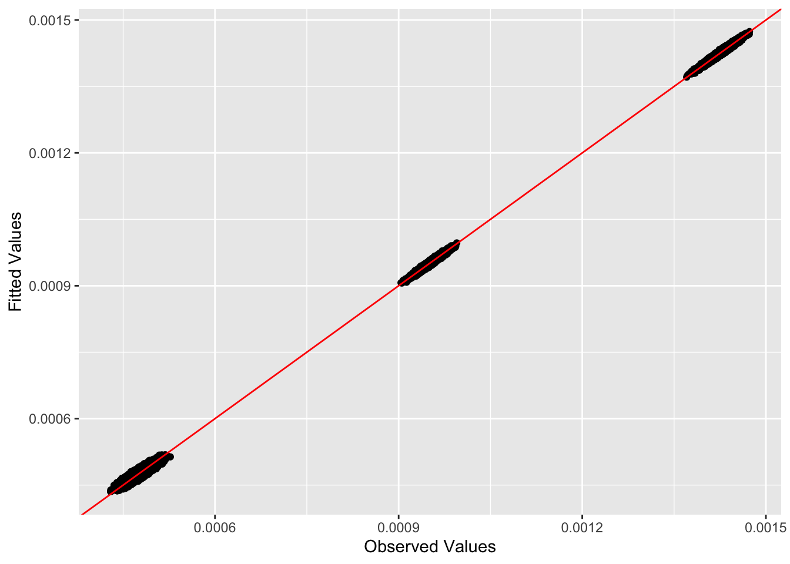
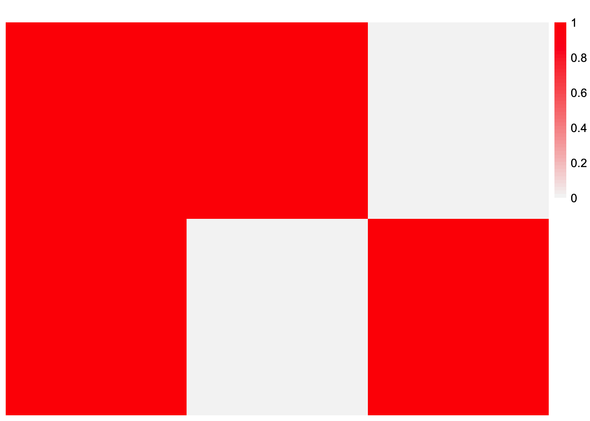
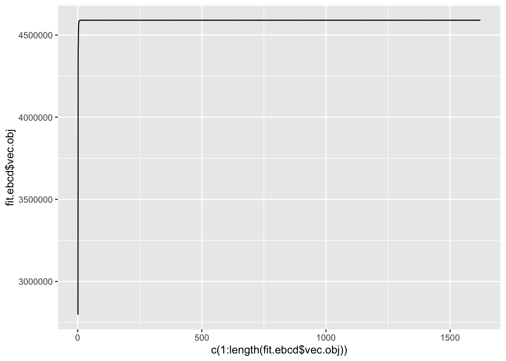
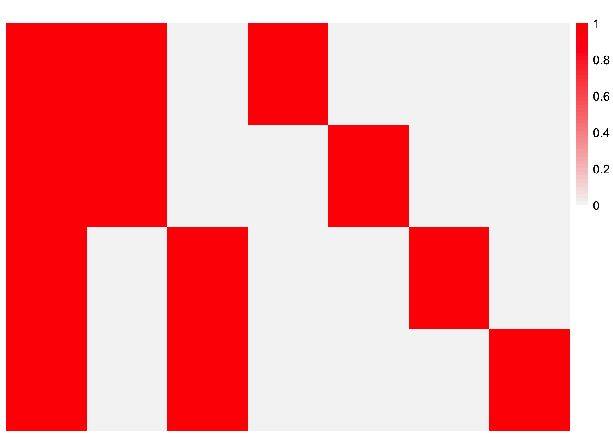
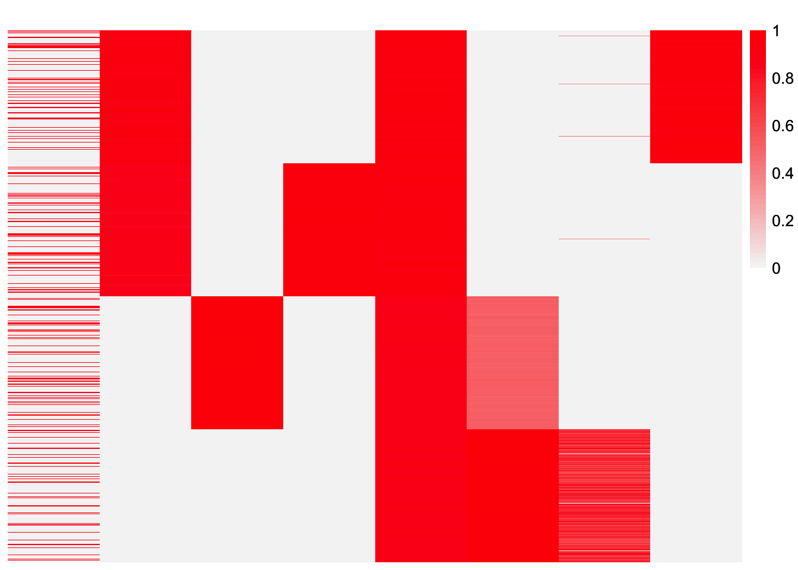

EBCD-laplace-splitting
Annie Xie
2024-05-17
Last updated: 2024-05-29
Checks: 7 0
Knit directory: EBCD_GBCD_comparison/
This reproducible R Markdown analysis was created with workflowr (version 1.7.1). The Checks tab describes the reproducibility checks that were applied when the results were created. The Past versions tab lists the development history.
Great! Since the R Markdown file has been committed to the Git repository, you know the exact version of the code that produced these results.
Great job! The global environment was empty. Objects defined in the global environment can affect the analysis in your R Markdown file in unknown ways. For reproduciblity it’s best to always run the code in an empty environment.
The command set.seed(20240229) was run prior to running
the code in the R Markdown file. Setting a seed ensures that any results
that rely on randomness, e.g. subsampling or permutations, are
reproducible.
Great job! Recording the operating system, R version, and package versions is critical for reproducibility.
Nice! There were no cached chunks for this analysis, so you can be confident that you successfully produced the results during this run.
Great job! Using relative paths to the files within your workflowr project makes it easier to run your code on other machines.
Great! You are using Git for version control. Tracking code development and connecting the code version to the results is critical for reproducibility.
The results in this page were generated with repository version c0db709. See the Past versions tab to see a history of the changes made to the R Markdown and HTML files.
Note that you need to be careful to ensure that all relevant files for
the analysis have been committed to Git prior to generating the results
(you can use wflow_publish or
wflow_git_commit). workflowr only checks the R Markdown
file, but you know if there are other scripts or data files that it
depends on. Below is the status of the Git repository when the results
were generated:
Ignored files:
Ignored: .DS_Store
Ignored: .Rhistory
Ignored: code/.DS_Store
Ignored: data/.DS_Store
Untracked files:
Untracked: analysis/ridgeless-regression-comparison.Rmd
Note that any generated files, e.g. HTML, png, CSS, etc., are not included in this status report because it is ok for generated content to have uncommitted changes.
These are the previous versions of the repository in which changes were
made to the R Markdown
(analysis/EBCD-laplace-splitting.Rmd) and HTML
(docs/EBCD-laplace-splitting.html) files. If you’ve
configured a remote Git repository (see ?wflow_git_remote),
click on the hyperlinks in the table below to view the files as they
were in that past version.
| File | Version | Author | Date | Message |
|---|---|---|---|---|
| Rmd | c0db709 | Annie Xie | 2024-05-29 | Add experiments for laplace-splitting initialization |
Introduction
When applying EBCD to simulated data where the true loadings matrix had binary, linearly dependent columns, we found that EBCD would oftentimes fail to recover the loadings matrix we desired (i.e. the loadings matrix used to generate the data). Instead, it would find a different loadings matrix that would still provide a good fit to the data, but did not include e.g. all the subtype effects. This is possible because our original loadings matrix had linearly dependent columns, and we do not restrict the loadings estimate to be binary. Our choice of prior encourages it to be binary, but it also provides flexibility for effects to not be binary.
One hypothesis is that GBCD may be able to recover the desired loadings matrix because of a strategy used in its implementation. Before fitting the model with the generalized binary prior, GBCD first fits the model with a point-laplace prior and then splits the loadings into their positive and negative parts. The concatenation of the positive and negative parts is used as the initialization for the model fit with the generalized binary prior.
In this analysis, I want to explore this strategy with EBCD and see if it improves results.
Packages and Functions
library(ggplot2)
library(cowplot)
library(RColorBrewer)
library(ggrepel)
library(pheatmap)
library(gridExtra)
#library(Seurat)
library(Matrix)
library(ebnm)
library(flashier)
library(magrittr)
library(ashr)
library(irlba)
library(reshape2)
library(patchwork)
Attaching package: 'patchwork'The following object is masked from 'package:cowplot':
align_plotslibrary(fastTopics)
#source("~/Documents/PhD 3/Research/EBCD/gbcd-workflow/code/fit_cov_ebnmf.R")plot_heatmap <- function(L, title = "", colors_range = c("gray96", "red")){
### define the color map
cols <- colorRampPalette(colors_range)(49)
brks <- seq(min(L), max(L), length=50)
plt <- pheatmap(L, show_rownames = FALSE, show_colnames = FALSE, cluster_rows = FALSE, cluster_cols = FALSE, color = cols, breaks = brks, main = title)
return(plt)
}source("~/Documents/PhD 3/Research/EBCD/ebcd_functions.R")Testing EBCD with Laplace prior
Before testing the Laplace-Splitting strategy, we will investigate EBCD with the Laplace prior. In particular, we are interested in seeing if EBCD with the point Laplace prior returns the divergence factorization (which should be easier to find than the drift factorization).
Simulated data with only subtype effects
Data Generation
generate_normal_data <- function(noise_sd){
### simulate L
LL <- matrix(0, nrow=800, ncol=3)
LL[,1] <- 1
LL[1:400, 2] <- 1
LL[401:800, 3] <- 1
### simulate F
FF <- matrix(0, nrow=1800, ncol = 3)
FF[1:600,1] <- rnorm(600, mean = 0, sd = 1)
FF[601:1200,2] <- rnorm(600, mean = 0, sd = 1)
FF[1201:1800,3] <- rnorm(600, mean = 0, sd = 1)
FF <- t(t(FF)/apply(FF,2, function(x){return(sqrt(sum(x^2)))}))
##FF <- matrix(rnorm(3 * 2100, sd = 1), ncol = 3)
### generate normal noise
E <- matrix(rnorm(800*1800, mean = 0, sd = noise_sd), ncol = 1800)
### save the simulated data
data <- list(Y = LL %*% t(FF) + E, LL = LL, FF = FF)
return(data)
}set.seed(2052)
data_norm <- generate_normal_data(0.01)dim(data_norm$Y)[1] 800 1800These are some visualizations of the simulated data. This is a heatmap of the loadings matrix.
plot_heatmap(data_norm$LL)
This is a heatmap of the factor matrix.
plot_heatmap(data_norm$FF, colors_range = c('blue','red'))
This is a heatmap of \(F^{T}F\). This is to check that it is orthogonal.
plot_heatmap(t(data_norm$FF) %*% data_norm$FF)
observed.vals <- data_norm$Y %*% t(data_norm$Y)/ ncol(data_norm$Y)This is a heatmap of the Gram matrix.
plot_heatmap(observed.vals)
EBCD with Point-Laplace Prior
set.seed(6287)
fit.ebcd.laplace <- ebcd(X = t(data_norm$Y), Kmax = 2)This is a plot of the estimate of \(L\).
plot_heatmap(fit.ebcd.laplace$EL, colors_range = c('blue','red'))ebcd.laplace.fitted.vals <- fit.ebcd.laplace$EL %*% t(fit.ebcd.laplace$EL)This is a plot of \(LL^{T}\).
plot_heatmap(ebcd.laplace.fitted.vals)This is the L2 norm of the difference between the observed values and the fitted values.
sum((observed.vals - ebcd.laplace.fitted.vals)^2)[1] 1.151023e-05This is the L2 norm of the difference between the off-diagonal entries of the observed values and fitted values.
sum((observed.vals - ebcd.laplace.fitted.vals)^2) - sum((diag(observed.vals) - diag(ebcd.laplace.fitted.vals))^2)[1] 3.534596e-06This is a plot of (a subset of) the off-diagonal entries of the fitted values vs. observed values:
set.seed(3952)
diag_idx <- seq(1, prod(dim(observed.vals)), length.out = ncol(observed.vals))
off_diag_idx <- setdiff(c(1:prod(dim(observed.vals))), diag_idx)
samp.vals <- sample(off_diag_idx, size = 100000)ggplot(data = NULL, aes(x = c(as.matrix(observed.vals))[samp.vals], y = c(ebcd.laplace.fitted.vals)[samp.vals])) + geom_point() + xlab('Observed Values') + ylab('Fitted Values') + geom_abline(slope = 1, intercept = 0, color = 'red')This is a plot of the diagonal entries of the fitted values vs. the diagonal entries of the observed values:
ggplot(data = NULL, aes(x = diag(as.matrix(observed.vals)), y = diag(ebcd.laplace.fitted.vals))) + geom_point() + xlab('Observed Values') + ylab('Fitted Values') + geom_abline(slope = 1, intercept = 0, color = 'red')This is a plot of the progression of the objective function
ggplot(data = NULL, aes(x = c(1:length(fit.ebcd.laplace$vec.obj)), y = fit.ebcd.laplace$vec.obj)) + geom_line()This is the number of iterations that the backfit did before the convergence criterion was satisfied:
length(fit.ebcd.laplace$vec.obj)[1] 10This is the value of the objective function that was attained:
fit.ebcd.laplace$vec.obj[length(fit.ebcd.laplace$vec.obj)][1] 4582781Observations
In this setting where the data only has subtype effects, EBCD is able to recover the divergence factorization. The first factor appears to have positive loadings for all the samples. The second factor appears to have positive loadings for the second half of the samples and negative loadings for the first half of the samples. This factor corresponds to the split of the samples into two different subtypes.
Simulated data with subtype and patient effects
Data Generation
generate_normal_data_patient <- function(noise_sd){
### simulate L
LL <- matrix(0, nrow=800, ncol=7)
LL[,1] <- 1
LL[1:400, 2] <- 1
LL[401:800, 3] <- 1
LL[1:200,4] <- 1
LL[201:400, 5] <- 1
LL[401:600, 6] <- 1
LL[601:800, 7] <- 1
### simulate F
FF <- matrix(0, nrow=2100, ncol = 7)
FF[1:300,1] <- rnorm(300, mean = 0, sd = 1)
FF[301:600,2] <- rnorm(300, mean = 0, sd = 1)
FF[601:900,3] <- rnorm(300, mean = 0, sd = 1)
FF[901:1200, 4] <- rnorm(300, mean = 0, sd = 1)
FF[1201:1500, 5] <- rnorm(300, mean = 0, sd = 1)
FF[1501:1800,6] <- rnorm(300, mean = 0, sd = 1)
FF[1801:2100, 7] <- rnorm(300, mean = 0, sd = 1)
FF <- t(t(FF)/apply(FF,2, function(x){return(sqrt(sum(x^2)))}))
##FF <- matrix(rnorm(3 * 2100, sd = 1), ncol = 3)
### generate normal noise
E <- matrix(rnorm(800*2100, mean = 0, sd = noise_sd), ncol = 2100)
### save the simulated data
data <- list(Y = LL %*% t(FF) + E, LL = LL, FF = FF)
return(data)
}set.seed(2052)
data_norm_patient <- generate_normal_data_patient(0.01)dim(data_norm_patient$Y)[1] 800 2100plot_heatmap(data_norm_patient$LL)
plot_heatmap(t(data_norm_patient$FF) %*% data_norm_patient$FF)
observed.vals_patient <- data_norm_patient$Y %*% t(data_norm_patient$Y)/ ncol(data_norm_patient$Y)plot_heatmap(observed.vals_patient)
EBCD with Point-Laplace Prior
set.seed(6287)
fit.ebcd.laplace_patient <- ebcd(X = t(data_norm_patient$Y), Kmax = 4, maxiter_backfit = 10000, ebnm_fn = ebnm::ebnm_point_laplace)This is a plot of the estimate of \(L\).
plot_heatmap(fit.ebcd.laplace_patient$EL, colors_range = c('blue','red'))ebcd.laplace.fitted.vals_patient <- fit.ebcd.laplace_patient$EL %*% t(fit.ebcd.laplace_patient$EL)This is a plot of \(LL^{T}\).
plot_heatmap(ebcd.laplace.fitted.vals_patient)This is the L2 norm of the difference between the observed values and the fitted values.
sum((observed.vals_patient - ebcd.laplace.fitted.vals_patient)^2)[1] 1.698491e-05This is the L2 norm of the difference between the off-diagonal entries of the observed values and fitted values.
sum((observed.vals_patient - ebcd.laplace.fitted.vals_patient)^2) - sum((diag(observed.vals_patient) - diag(ebcd.laplace.fitted.vals_patient))^2)[1] 9.036393e-06This is a plot of (a subset of) the off-diagonal entries of the fitted values vs. observed values:
set.seed(3952)
diag_idx <- seq(1, prod(dim(observed.vals_patient)), length.out = ncol(observed.vals_patient))
off_diag_idx <- setdiff(c(1:prod(dim(observed.vals_patient))), diag_idx)
samp.vals <- sample(off_diag_idx, size = 100000)ggplot(data = NULL, aes(x = c(as.matrix(observed.vals_patient))[samp.vals], y = c(ebcd.laplace.fitted.vals_patient)[samp.vals])) + geom_point() + xlab('Observed Values') + ylab('Fitted Values') + geom_abline(slope = 1, intercept = 0, color = 'red')
This is a plot of the diagonal entries of the fitted values vs. the diagonal entries of the observed values:
ggplot(data = NULL, aes(x = diag(as.matrix(observed.vals_patient)), y = diag(ebcd.laplace.fitted.vals_patient))) + geom_point() + xlab('Observed Values') + ylab('Fitted Values') + geom_abline(slope = 1, intercept = 0, color = 'red')This is a plot of the progression of the objective function
ggplot(data = NULL, aes(x = c(1:length(fit.ebcd.laplace_patient$vec.obj)), y = fit.ebcd.laplace_patient$vec.obj)) + geom_line()This is the number of iterations that the backfit did before the convergence criterion was satisfied:
length(fit.ebcd.laplace_patient$vec.obj)[1] 10000This is the value of the objective function that was attained:
fit.ebcd.laplace_patient$vec.obj[length(fit.ebcd.laplace_patient$vec.obj)][1] 5344574Observations
In this setting where the data have both subtype and patient effects,
EBCD is able to recover the divergence factorization. However, it needs
a large number of backfit iterations in order to recover the divergence
factorization. If you only use the default number of backfit iterations,
maxiter_backfit = 5000, you will not recover the divergence
factorization. The resulting factorization will group some of the
patient effects together. When the number of backfit iterations is
increased to 10000, then the resulting factorization looks like the
desired divergence factorization. The first factor looks like it has
positive loadings on all of the samples. The second factor looks like it
has positive loadings on the second half of the samples and negative
loadings on the first half of the samples. This corresponds to the split
into subtypes. The third factor looks like it has zero loading on the
first half of the samples. In addition, it looks like it has negative
loadings on the first half of the second half of samples and positive
loadings on the second half of the second half of samples. This
corresponds to the split of subtype 2 into two different patients. The
fourth factor has a similar pattern – it appears to have zero loading on
the second half of samples. It also appears to have negative loadings on
the first half of the first half of samples and positive loadings on the
second half of the first half of samples. This corresponds to the split
of subtype 1 into two different patients.
Implementing the Laplace-Splitting Strategy
ebcd_laplace_split <- function(X = NULL,
S = NULL,
C = NULL,
N = NULL,
Kmax = 5,
tol_greedy = 1e-6,
maxiter_greedy = 500,
tol_backfit = 1e-6,
maxiter_backfit = 5000,
laplace_maxiter_greedy = 100,
laplace_maxiter_backfit = 500){
# run ebcd with laplace prior on L (maybe change some of the iteration values)
ebcd.laplace <- ebcd(X = X,
S = S,
C = C,
N = N,
Kmax = Kmax,
ebnm_fn = ebnm::ebnm_point_laplace,
tol_greedy = 1e-6,
maxiter_greedy = laplace_maxiter_greedy,
tol_backfit = 1e-6,
maxiter_backfit = laplace_maxiter_backfit)
#split the L estimate into positive and negative parts
L.split <- cbind(pmax(ebcd.laplace$EL, 0), pmax(-1*ebcd.laplace$EL, 0))
#initialize generalized binary model fit with L.split
Z.init <- PolarU(ebcd.laplace$A%*%L.split)
fitted.Y <- Z.init%*%t(L.split)
tau.est <- prod(dim(ebcd.laplace$A)) / sum((ebcd.laplace$A - fitted.Y)^2)
ebcd.fit.init <- list(
A = ebcd.laplace$A, N = ebcd.laplace$N, nrowA = ebcd.laplace$nrowA,
tau = tau.est, Z = Z.init, EL = L.split, ebnm_fn = ebnm::ebnm_generalized_binary
)
ebcd.fit <- ebcd_backfit(ebcd.fit.init, tol = tol_backfit, maxiter = maxiter_backfit)
return(list(ebcd.fit = ebcd.fit, ebcd.fit.init = ebcd.fit.init))
}Simulated Data with only subtype effects
Data Generation
generate_normal_data <- function(noise_sd){
### simulate L
LL <- matrix(0, nrow=800, ncol=3)
LL[,1] <- 1
LL[1:400, 2] <- 1
LL[401:800, 3] <- 1
### simulate F
FF <- matrix(0, nrow=1800, ncol = 3)
FF[1:600,1] <- rnorm(600, mean = 0, sd = 1)
FF[601:1200,2] <- rnorm(600, mean = 0, sd = 1)
FF[1201:1800,3] <- rnorm(600, mean = 0, sd = 1)
FF <- t(t(FF)/apply(FF,2, function(x){return(sqrt(sum(x^2)))}))
##FF <- matrix(rnorm(3 * 2100, sd = 1), ncol = 3)
### generate normal noise
E <- matrix(rnorm(800*1800, mean = 0, sd = noise_sd), ncol = 1800)
### save the simulated data
data <- list(Y = LL %*% t(FF) + E, LL = LL, FF = FF)
return(data)
}set.seed(2052)
data_norm <- generate_normal_data(0.01)dim(data_norm$Y)[1] 800 1800These are some visualizations of the simulated data. This is a heatmap of the loadings matrix.
plot_heatmap(data_norm$LL)
This is a heatmap of the factor matrix.
plot_heatmap(data_norm$FF, colors_range = c('blue','red'))This is a heatmap of \(F^{T}F\). This is to check that it is orthogonal.
plot_heatmap(t(data_norm$FF) %*% data_norm$FF)
observed.vals <- data_norm$Y %*% t(data_norm$Y)/ ncol(data_norm$Y)This is a heatmap of the Gram matrix.
plot_heatmap(observed.vals)
Hypothesis
Based off the performance of GBCD, I hypothesize the results will look closer to binary and EBCD should return something that more closely reflects the true matrix.
Analysis
set.seed(295)
fit.ebcd <- ebcd_laplace_split(X = t(data_norm$Y), Kmax = 2)$ebcd.fitThis is a plot of the scaled estimate of \(L\). This estimate is scaled such that the infinity norm for each column is 1, i.e. the maximum value for each column is 1.
plot_heatmap(t(t(fit.ebcd$EL)/apply(fit.ebcd$EL,2, max)))plot_heatmap(fit.ebcd$EL)
sqrt(apply(fit.ebcd$EL, 2, function(x){return(sum(x^2))}))[1] 0.01421584 0.47161592 0.66666389 0.47116433transformed_Z <- transform_ebcd_Z(t(data_norm$Y), fit.ebcd)This is a plot of the factor matrix.
plot_heatmap(transformed_Z, colors_range = c('blue', 'red'))ebcd.fitted.vals <- fit.ebcd$EL %*% t(fit.ebcd$EL)This is a plot of \(LL^{T}\).
plot_heatmap(ebcd.fitted.vals)This is the L2 norm of the difference between the observed values and the fitted values.
sum((observed.vals - ebcd.fitted.vals)^2)[1] 4.628108e-05This is the L2 norm of the difference between the off-diagonal entries of the observed values and fitted values.
sum((observed.vals - ebcd.fitted.vals)^2) - sum((diag(observed.vals) - diag(ebcd.fitted.vals))^2)[1] 3.837139e-05This is a plot of (a subset of) the off-diagonal entries of the fitted values vs. observed values:
set.seed(3952)
diag_idx <- seq(1, prod(dim(observed.vals)), length.out = ncol(observed.vals))
off_diag_idx <- setdiff(c(1:prod(dim(observed.vals))), diag_idx)
samp.vals <- sample(off_diag_idx, size = 100000)ggplot(data = NULL, aes(x = c(as.matrix(observed.vals))[samp.vals], y = c(ebcd.fitted.vals)[samp.vals])) + geom_point() + xlab('Observed Values') + ylab('Fitted Values') + geom_abline(slope = 1, intercept = 0, color = 'red')This is a plot of the diagonal entries of the fitted values vs. the diagonal entries of the observed values:
ggplot(data = NULL, aes(x = diag(as.matrix(observed.vals)), y = diag(ebcd.fitted.vals))) + geom_point() + xlab('Observed Values') + ylab('Fitted Values') + geom_abline(slope = 1, intercept = 0, color = 'red')This is a plot of the progression of the objective function
ggplot(data = NULL, aes(x = c(1:length(fit.ebcd$vec.obj)), y = fit.ebcd$vec.obj)) + geom_line()
This is the number of iterations that the backfit did before the convergence criterion was satisfied:
length(fit.ebcd$vec.obj)[1] 1622This is the value of the objective function that was attained:
fit.ebcd$vec.obj[length(fit.ebcd$vec.obj)][1] 4590250Observations
EBCD was able to recover the baseline factor and the two subtype factors. It also maintains an additional shared GEP. I’m not exactly sure where this GEP comes from since all the data should be on a comparable scale.
Simulated Data with subtype and patient effects
Data Generation
generate_normal_data_patient <- function(noise_sd){
### simulate L
LL <- matrix(0, nrow=800, ncol=7)
LL[,1] <- 1
LL[1:400, 2] <- 1
LL[401:800, 3] <- 1
LL[1:200,4] <- 1
LL[201:400, 5] <- 1
LL[401:600, 6] <- 1
LL[601:800, 7] <- 1
### simulate F
FF <- matrix(0, nrow=2100, ncol = 7)
FF[1:300,1] <- rnorm(300, mean = 0, sd = 1)
FF[301:600,2] <- rnorm(300, mean = 0, sd = 1)
FF[601:900,3] <- rnorm(300, mean = 0, sd = 1)
FF[901:1200, 4] <- rnorm(300, mean = 0, sd = 1)
FF[1201:1500, 5] <- rnorm(300, mean = 0, sd = 1)
FF[1501:1800,6] <- rnorm(300, mean = 0, sd = 1)
FF[1801:2100, 7] <- rnorm(300, mean = 0, sd = 1)
FF <- t(t(FF)/apply(FF,2, function(x){return(sqrt(sum(x^2)))}))
##FF <- matrix(rnorm(3 * 2100, sd = 1), ncol = 3)
### generate normal noise
E <- matrix(rnorm(800*2100, mean = 0, sd = noise_sd), ncol = 2100)
### save the simulated data
data <- list(Y = LL %*% t(FF) + E, LL = LL, FF = FF)
return(data)
}set.seed(2052)
data_norm_patient <- generate_normal_data_patient(0.01)dim(data_norm_patient$Y)[1] 800 2100plot_heatmap(data_norm_patient$LL)
plot_heatmap(t(data_norm_patient$FF) %*% data_norm_patient$FF)
observed.vals_patient <- data_norm_patient$Y %*% t(data_norm_patient$Y)/ ncol(data_norm_patient$Y)plot_heatmap(observed.vals_patient)
Hypothesis
Based off of the performance of GBCD, I hypothesize that EBCD with the laplace-splitting initialization (with the proper choice of parameters) will be able to recover both the subtype effects and the patient effects.
Analysis
set.seed(295)
fit.ebcd_patient_full_list <- ebcd_laplace_split(X = t(data_norm_patient$Y), Kmax = 4, laplace_maxiter_greedy = 500, laplace_maxiter_backfit = 10000)
fit.ebcd_patient <- fit.ebcd_patient_full_list$ebcd.fit
fit.ebcd_patient.init <- fit.ebcd_patient_full_list$ebcd.fit.initThis is a plot of the scaled estimate of \(L\). This estimate is scaled such that the infinity norm for each column is 1, i.e. the maximum value for each column is 1.
plot_heatmap(t(t(fit.ebcd_patient$EL)/apply(fit.ebcd_patient$EL,2, max)))
This is a plot of the unscaled estimate of \(L\).
plot_heatmap(fit.ebcd_patient$EL)This is a plot of the factor matrix.
transformed_Z_patient <- transform_ebcd_Z(t(data_norm_patient$Y), fit.ebcd_patient)plot_heatmap(transformed_Z_patient, colors_range = c('blue', 'red'))ebcd.fitted.vals_patient <- fit.ebcd_patient$EL %*% t(fit.ebcd_patient$EL)This is a plot of \(LL^{T}\).
plot_heatmap(ebcd.fitted.vals_patient)This is a plot of the Gram matrix.
plot_heatmap(observed.vals_patient)
sum((observed.vals_patient - ebcd.fitted.vals_patient)^2)[1] 7.025129e-05sum((observed.vals_patient - ebcd.fitted.vals_patient)^2) - sum((diag(observed.vals_patient) - diag(ebcd.fitted.vals_patient))^2)[1] 6.242368e-05This is a plot of (a subset of) the fitted values vs. observed values:
set.seed(3952)
diag_idx <- seq(1, prod(dim(observed.vals_patient)), length.out = ncol(observed.vals_patient))
off_diag_idx <- setdiff(c(1:prod(dim(observed.vals_patient))), diag_idx)
samp.vals <- sample(off_diag_idx, size = 100000)ggplot(data = NULL, aes(x = c(as.matrix(observed.vals_patient))[samp.vals], y = c(ebcd.fitted.vals_patient)[samp.vals])) + geom_point() + xlab('Observed Values') + ylab('Fitted Values') + geom_abline(slope = 1, intercept = 0, color = 'red')This is a plot of the diagonal entries of the fitted values vs. the diagonal entries of the observed values:
ggplot(data = NULL, aes(x = diag(as.matrix(observed.vals_patient)), y = diag(ebcd.fitted.vals_patient))) + geom_point() + xlab('Observed Values') + ylab('Fitted Values') + geom_abline(slope = 1, intercept = 0, color = 'red')This is a plot of the progression of the objective function
ggplot(data = NULL, aes(x = c(1:length(fit.ebcd_patient$vec.obj)), y = fit.ebcd_patient$vec.obj)) + geom_line()This is the number of iterations that the backfit did before the convergence criterion was satisfied:
length(fit.ebcd_patient$vec.obj)[1] 372This is the value of the objective function that was attained:
fit.ebcd_patient$vec.obj[length(fit.ebcd_patient$vec.obj)][1] 5356388Observations
EBCD with the laplace-splitting initialization (with default parameters – results not shown here) was able to recover the baseline factor and the subtype factors. However, it did not recover the patient effects as separate factors. Instead, it coupled the patient effects, i.e. for a given factor, it is loaded on two patients rather than a singular patient. The loadings estimate has all of the possible combinations of two patients included as factors. I’m not exactly sure why it did that. It is especially counterintuitive that patients 2 and 3 would be paired together since they belong to different subtypes. It is also confusing that the estimate still fits the data pretty well. I’m guessing there is some identifiabiility issue that’s going on here.
I checked the Laplace prior initialization, and I found that EBCD requires a lot more iterations than the default to get a factorization that looks like the divergence factorization we desire. Given this information, I increased the number of backfit iterations in the initialization step. The resulting EBCD estimate for the loadings looks better. However, it still does not look exactly like the loadings matrix we used to generate the data.
In one example, the subtype effects are paired with a patient effect (the loading values for the patient effect is small, but it is still there). Furthermore, the baseline factor does not have constant loading values across patients. For the patients that appear with the subtype effects, the loading value in the baseline factor is smaller than the loading value for the other patients. If I remember correctly, there also was an additional loadings vector that seemed to only be loaded on one sample. I think this was used to improve the estimation of the diagonal entries; I remember on the fitted vs. observed values plot for the diagonal entries, there actually was one sample whose estimate matched the observed value. In another example, the estimate recovers the baseline, two subtype-similar effects, and four patient-similar effects. However, for one of the subtypes, the loadings are not constant across the subtype. Also, one of the patient effects has a very small loading value compared to the other patient effects.
I hypothesize that there is an identifiability issue occurring. After further discussion with Matthew, one hypothesis is EBCD is getting stuck in non-sparse solutions. One explanation is once the prior is fit to be non-sparse, it is difficult to get to a sparse solution.
Exploring the EBCD estimate
This is the initialization used for EBCD.
plot_heatmap(fit.ebcd_patient.init$EL)
This is the EBCD estimate after backfitting for 1 iteration.
fit.ebcd_patient_iter1 <- ebcd_backfit(fit.ebcd_patient.init, maxiter = 1)This is a plot of the scaled estimate of \(L\). This estimate is scaled such that the infinity norm for each column is 1, i.e. the maximum value for each column is 1.
plot_heatmap(t(t(fit.ebcd_patient_iter1$EL)/apply(fit.ebcd_patient_iter1$EL,2, max)))This is a plot of the unscaled estimate of \(L\).
plot_heatmap(fit.ebcd_patient_iter1$EL)This is the EBCD estimate after backfitting for 2 iterations.
fit.ebcd_patient_iter2 <- ebcd_backfit(fit.ebcd_patient.init, maxiter = 2)This is a plot of the scaled estimate of \(L\). This estimate is scaled such that the infinity norm for each column is 1, i.e. the maximum value for each column is 1.
plot_heatmap(t(t(fit.ebcd_patient_iter2$EL)/apply(fit.ebcd_patient_iter2$EL,2, max)))This is a plot of the unscaled estimate of \(L\).
plot_heatmap(fit.ebcd_patient_iter2$EL)
This is the EBCD estimate after backfitting for 10 iterations.
fit.ebcd_patient_iter10 <- ebcd_backfit(fit.ebcd_patient.init, maxiter = 10)This is a plot of the scaled estimate of \(L\). This estimate is scaled such that the infinity norm for each column is 1, i.e. the maximum value for each column is 1.
plot_heatmap(t(t(fit.ebcd_patient_iter10$EL)/apply(fit.ebcd_patient_iter10$EL,2, max)))This is a plot of the unscaled estimate of \(L\).
plot_heatmap(fit.ebcd_patient_iter10$EL)Observations
Looking at the initialization, the subtype effects do not have loading values as high as those of the baseline factor. Furthermore, the patient effects do not have loading values as high as those of the subtype factors. Therefore, I think this is causing the identifiability issues in the resulting EBCD estimate.
sessionInfo()R version 4.3.2 (2023-10-31)
Platform: aarch64-apple-darwin20 (64-bit)
Running under: macOS Sonoma 14.4.1
Matrix products: default
BLAS: /Library/Frameworks/R.framework/Versions/4.3-arm64/Resources/lib/libRblas.0.dylib
LAPACK: /Library/Frameworks/R.framework/Versions/4.3-arm64/Resources/lib/libRlapack.dylib; LAPACK version 3.11.0
locale:
[1] en_US.UTF-8/en_US.UTF-8/en_US.UTF-8/C/en_US.UTF-8/en_US.UTF-8
time zone: America/Chicago
tzcode source: internal
attached base packages:
[1] stats graphics grDevices utils datasets methods base
other attached packages:
[1] fastTopics_0.6-142 patchwork_1.2.0 reshape2_1.4.4 irlba_2.3.5.1
[5] ashr_2.2-66 magrittr_2.0.3 flashier_1.0.53 ebnm_1.1-27
[9] Matrix_1.6-5 gridExtra_2.3 pheatmap_1.0.12 ggrepel_0.9.5
[13] RColorBrewer_1.1-3 cowplot_1.1.3 ggplot2_3.5.1 workflowr_1.7.1
loaded via a namespace (and not attached):
[1] pbapply_1.7-2 rlang_1.1.3 git2r_0.33.0
[4] horseshoe_0.2.0 compiler_4.3.2 getPass_0.2-4
[7] callr_3.7.6 vctrs_0.6.5 quantreg_5.97
[10] quadprog_1.5-8 stringr_1.5.1 pkgconfig_2.0.3
[13] crayon_1.5.2 fastmap_1.2.0 mcmc_0.9-8
[16] labeling_0.4.3 utf8_1.2.4 promises_1.3.0
[19] rmarkdown_2.27 ps_1.7.6 MatrixModels_0.5-3
[22] purrr_1.0.2 xfun_0.44 cachem_1.1.0
[25] trust_0.1-8 jsonlite_1.8.8 progress_1.2.3
[28] highr_0.11 later_1.3.2 parallel_4.3.2
[31] prettyunits_1.2.0 R6_2.5.1 bslib_0.7.0
[34] stringi_1.8.4 SQUAREM_2021.1 jquerylib_0.1.4
[37] Rcpp_1.0.12 knitr_1.45 httpuv_1.6.15
[40] splines_4.3.2 tidyselect_1.2.1 rstudioapi_0.16.0
[43] yaml_2.3.8 processx_3.8.4 plyr_1.8.9
[46] lattice_0.22-6 tibble_3.2.1 withr_3.0.0
[49] coda_0.19-4.1 evaluate_0.23 Rtsne_0.17
[52] survival_3.6-4 RcppParallel_5.1.7 pillar_1.9.0
[55] whisker_0.4.1 plotly_4.10.4 softImpute_1.4-1
[58] generics_0.1.3 rprojroot_2.0.4 invgamma_1.1
[61] truncnorm_1.0-9 hms_1.1.3 munsell_0.5.1
[64] scales_1.3.0 glue_1.7.0 scatterplot3d_0.3-44
[67] lazyeval_0.2.2 tools_4.3.2 data.table_1.15.4
[70] SparseM_1.81 fs_1.6.4 grid_4.3.2
[73] tidyr_1.3.1 MCMCpack_1.7-0 colorspace_2.1-0
[76] deconvolveR_1.2-1 cli_3.6.2 Polychrome_1.5.1
[79] fansi_1.0.6 mixsqp_0.3-54 viridisLite_0.4.2
[82] dplyr_1.1.4 uwot_0.1.16 gtable_0.3.5
[85] sass_0.4.9 digest_0.6.35 farver_2.1.2
[88] htmlwidgets_1.6.4 htmltools_0.5.8.1 lifecycle_1.0.4
[91] httr_1.4.7 MASS_7.3-60.0.1